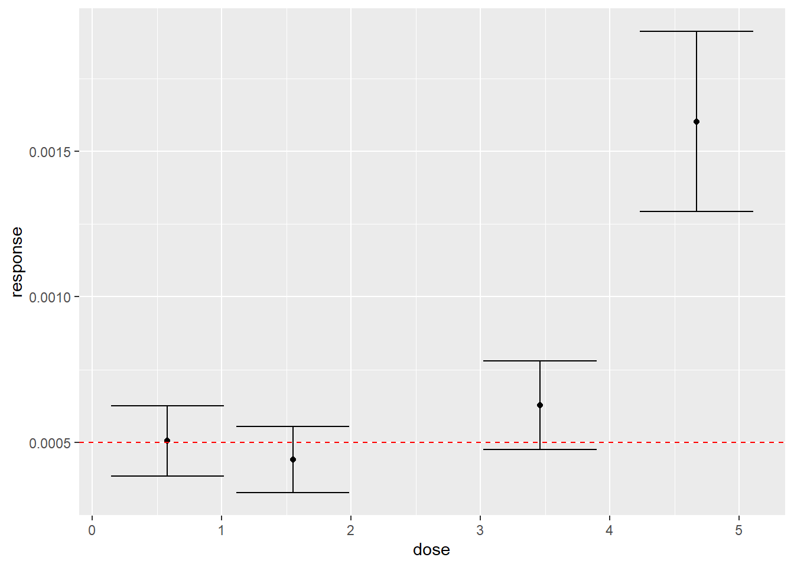
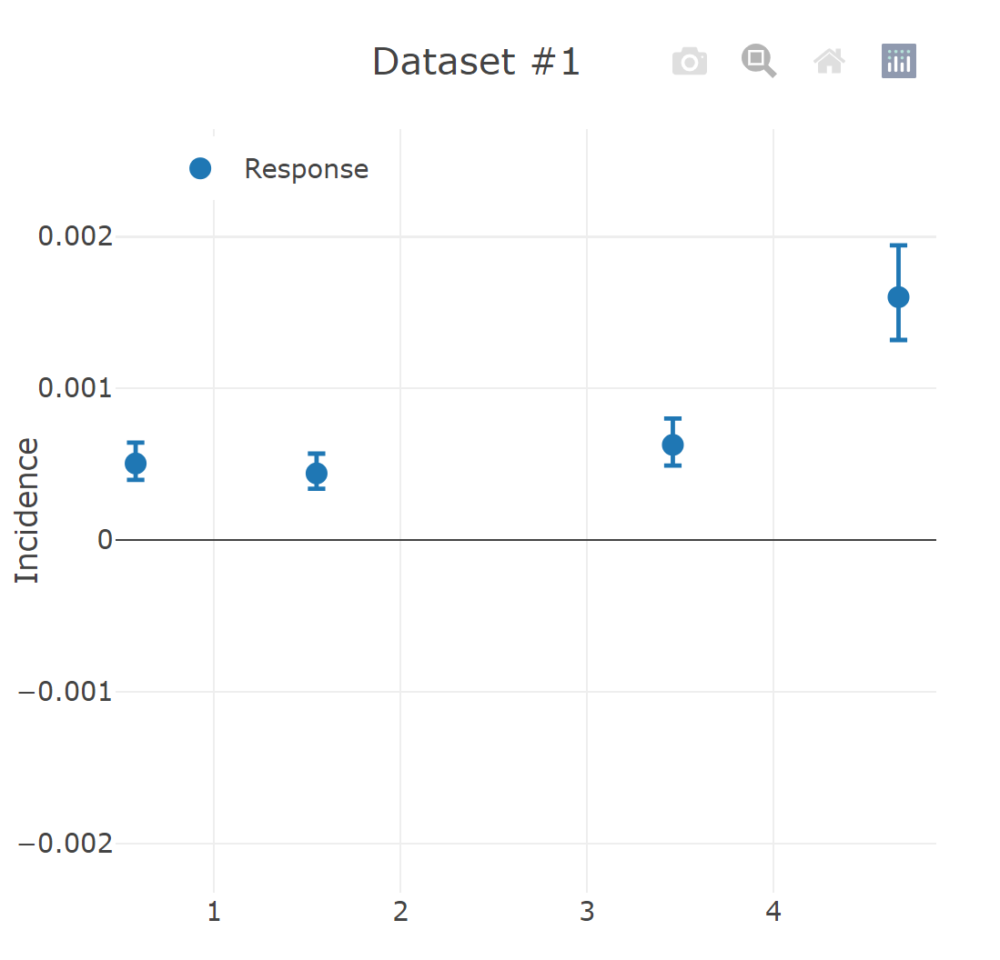

# A tibble: 4 × 3
Exposure.µg.kg.bw.per.day N Adj.cases
<dbl> <dbl> <dbl>
1 0.58 138516 70
2 1.55 136406 60
3 3.46 108281 68
4 4.67 66797 107Exercise Benchmark Dose Modelling
MVEN10 Risk Assessment in Environment and Public Health
Exercise overview
Do in groups of 2-3
Background
Risk from chemical exposure on environment and human health is commonly assessed by comparing assessments of exposure and effects. Conservative estimates of exposures resulting in adverse effects can be derived from observed concentrations where there is no observed effect or lowest observed effect. Another approach is to find a suitable model for the dose-response relationship and use the model (or models) to derive the highest dose that corresponds with a benchmark response of interest.
An example: Data from an epidemiological study consists of the incidence of a disease for groups of the population with different levels of lifetime exposure to a chemical. A dose-response curve is fitted through the data points. The benchmark response (BMR) is set to 5%. The benchmark dose (BMD) is the dose which corresponds to the BMR.
It is recommended to use a lower bound for the BMD resulting from consideration of the influence from uncertainty in the shape of the dose-response curve (including the parameters for the curve). This bound is referred to as the BMDL.
The width between the lower and upper bound of the BMD tells something about the reliability of the model.
Methods have been developed to choose between alternative models using the AIC as goodness-of-fit, or to derive the BMDL by model averaging.
There are several software for BMD modelling. The PROAST fits models using maximum likelihood and derives the lower and upper bounds on the BMD using bootstrapping. The US EPA BMDS software uses maximum likelihood for fitting models and Bayesian inference for model averaging. EFSA has a software for BMD modelling using Bayesian inference to fit and derive a probability distribution for the BMD. There are more software as well as R-packages for BMD modelling.
Purpose
- To perform a simple BMD modelling the dataset to derive the BMDL
Content
We have chosen two online BMD tools that does not require any login.
The BMD modelling software PROAST developed by RIVM https://www.rivm.nl/en/proast. We ask you to open the RIVM web application PROAST online no account
The BMD online tool from US EPAhttps://bmdsonline.epa.gov/
Data from an epidemiological study on the effect of Arsenic on the incidence of lung cancer in a population.
Duration
60 minutes
Reporting
Submit the reports from the BMD tool and be prepared to report back in class.
References
US EPA page about benchmark tools
EFSA (2022) Guidance on the use of the benchmark dose approach in risk assessment
Data
In this exercise we will use epidemiological data on the incidence of lung cancer from Steinmaus et al. (2013). Exposure is estimated as lifetime average, all years, based on arsenic daily intakes. This data is one of the studies used in the Arsenic case study.
Data consists of three variables:
Exposure.µg.kg.bw.per.day is the average life time exposure to Arsenic for groups of the population.
N is the total number of persons in each group
Adj.cases is the number of cases of lung cancer in each group
Below you can see the code to load data and generate new variables for plotting. It is shown here to examplify how to generate the plot below. You do not have to do it yourself.
df <- as_tibble(read_delim("../data/lung_cancer.txt",show_col_types=FALSE, delim = "\t")) %>%
rename(dose = Exposure.µg.kg.bw.per.day) %>%
mutate(response = Adj.cases/N) %>%
mutate(SE = sqrt((Adj.cases/N)*(1-Adj.cases/N)/N)) %>%
mutate(lower = response-2*SE) %>%
mutate(upper = response+2*SE)The assessment used a value of 0.0005 as the BMR. This is plotted as a red dashed line in the graph below.
Statistical estimation errors are indiced by error bars for each group.
value_for_CES = 0.0005
df %>%
ggplot(aes(x=dose, y = response)) +
geom_point() +
geom_errorbar(aes(ymin=lower,ymax=upper)) +
geom_hline(yintercept = value_for_CES, linetype = "dashed", color = "red")
- Download and view the lung cancer data in a text editor (you can for example use Notepad).
Choose one of the online BMD tools listed above and open a new session. We recommend you do both. We will report back in class when all groups have done at least one module.
Load data into the software
Recall the NOAEL/LOAEL approach from previous lectures
Does a NOAEL exist? If yes, what is it? If no, why?
Does a LOAEL exist? If yes, what is it? If no, why?
Choose File and press Upload
Provide an Analysis name
Press “Next: Specify”
Select the correct variable for the Dose column
Select the correct variable for the Response column
Tick Quantal as Type of response data
Select the N for the Group size column
Set BMR (CES) to 0.0005
Run the analysis without ticking Model averaging
When the State of the analysis is Finished, click on the icon for the Report Analysis results.
Graphical output - the graphs are not that interesting since the limits on the y-axis are too big.
Go back to the Overview on PROAST-web and click the icon for Advanced plotting
Change X axis scaling to None
Change Y axis to 0.002 and press Apply
Open the Report Analysis results again. Now the graphs of the dose-response curve per model should be better.
Fitted models - here you can see the goodness of fit (AIC) for alternative models and the corresponding BMD with lower and upper bounds. conv tells you if the model has converged. Only converged models should be used.
Discuss the meaning of converged. Is it possible to see any difference in the visualisation for the converged and non-converged models?
Take note of the lowest BMDL and highest BMDU over the six models that has converged.
Save the report from the webpage (e.g. by printing it to a PDF) into NN_lung_cancer.pdf where NN is your name.
Go back to the previous page (https://proastweb.rivm.nl/) and click on the icon named Specify.
Tick the box for Model averaging, use 200 for the Number of bootstrap runs and Run the analysis.
This might take some time.
When the State of the analysis is Finished, click on the icon for the Report Analysis results.
Model weights - this shows the weights for models used in the model averaging.
Discuss the meaning of the weights.
Which models are included in the model averaging?
Which model has the highest weight?
Note the BMDL and BMDU based on model averaging.
Save the report from the webpage (e.g. by printing it to a PDF) into NN_lung_cancer_MA.pdf where NN is your name
In Settings, provide an Analysis Name
Choose model Type to be Dichotomous
Goto Data, select Dichotomous as New dataset and click on +New
You can type in the Doses, N and Incidences by hand. You can also paste it in by first opening the lung_cancer.txt file in a text editor, select and copy data (no headers). Then you open the table button and paste the data in there and press load.
You can zoom in the graph so the y-axis range up to 0.003 (I have not figured out how to zoom out).
Goto Settings and set the BMR (bottom of the page) to 0.0005.
Click on Save Analysis
Click on Run Analysis
When it is done, you will be taken to Output
Zoom in on the graph to the right until it looks something like this

Scroll over the models in the table. You will see the curve plotted in the right graph.
Discuss the meaning of restricted and unrestricted
Discuss the meaning of questionable, viable and recommended.
Select a best-fitting model and save model selection
- Take note of the BMDL and BMDU for the selected model.
Click on Actions and download a report and save it as NN_lung_cancer_BDMS where NN is your name.
Go back to Settings and select gamma, loglogistic, LogProbit and Weibull under Alternatives/Bayesian Model Averaging
- Discuss why these models were selected
Click on Save Analysis
Click on Run Analysis
In Outputs, there is a new table called Bayesian Model Results. Discuss the meaning of prior and posterior weights
Which model has the highest weight in the Bayesian model averaging?
Note the BMDL and BMDU based on model averaging.
Save the report into NN_lung_cancer_BDMS_MA where NN is your name
- We will discuss the BMD modelling from both software in class. You are welcome to try out the other software.
Compare your NOAEL/LOAEL value with your BMD value from either software
Discuss two strengths and two weaknesses of the NOAEL/LOAEL approach and the BMD approach, respectively
Hints: you may start from the following points
what information is needed to practice each approach?
what statistical models are employed in the two approaches? how difficult are they to use (without software assistance)?
which approach derives a lower estimate? Is a lower estimate better than a higher one for setting regulatory limits?
can a NOAEL be derived from a LOAEL? from a BMD?
does the sample size have impacts on the estimates from the two approaches?
how are uncertainty and variability in the dataset considered in the two approaches?